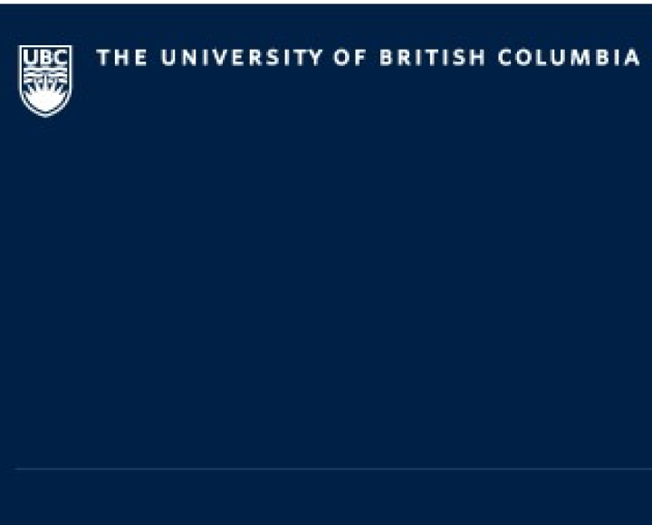

Why Donate?
Your Donation is an Incredible Gift to Education and the Health of the Community
Learning from human specimens makes a significant educational impact on students training to be healthcare professionals. Students develop a strong skill set and hands on anatomical training from which essential knowledge about the human body grows. Nine out of ten UBC MD graduates who completed their residency at UBC end up practicing in BC, giving back to our local communities.
From death comes life.
Body donors provide a service to future generations that carries on long after they have passed. Their
thoughtful choice provides students and practicing health care professionals with an invaluable
experience that can not be replicated by a video or captured in a text book.
Those who learn
from our donors are grateful for the unique opportunity they have to work with a human body. They are
aware of the obligation to conduct themselves in a professional manner and those who donate their bodies
to the medical school can be assured that all human remains are handled with the dignity and respect
that should be afforded to anyone.
“[S]omeone who has died can then live on, in the hands, and the hearts of our students, as they go about
practicing their medicine over many years.”
Dr.Olusegun Oyedele Associate Professor of
Teaching
““It was really amazing to me that the last people to spend time with my grandparents would have been my
now called colleagues. And knowing who they are and what they are like, there are very few people that I
would trust or want to be the last people to see my grandparents.”
Kate Fitzsimmons, 2nd Year
UBC Medical Student
Family member of Donor
